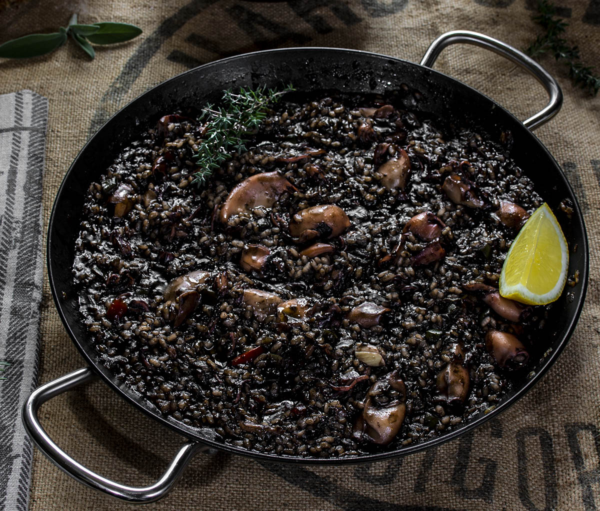

Arroz Negro

Esto es una imagen de un Arroz Negro
Para preparar un arroz negro casero, mezcla arroz, agua, aceite de oliva y una combinación de especias para crear la base.
Cocina lentamente, permitiendo que los sabores se absorban en el arroz.
Añade ingredientes como calamares, sepia, gambas y ajo negro para enriquecer el plato.
Continúa cocinando hasta que el arroz esté tierno y haya absorbido los sabores.
Personaliza con limón y perejil fresco justo antes de servir.
¡Listo para disfrutar de un delicioso arroz negro casero!
Ingredientes
- Arroz
- Agua o Caldo de Pescado
- Aceite de Oliva
- Tinta de calamar o sepia (para dar color al arroz negro)
- Pimentón
- Tomates
- Pimientos
- Calamares
- Sepia
- Gambas
- Ajo Negro
Pasos para Hacer Arroz Negro
- Calentar aceite de oliva en una paellera.
- Añadir los pimientos, calamares, sepia y gambas, y saltear hasta que estén tiernos.
- Incorporar el tomate triturado y cocinar hasta que se reduzca y espese.
- Agregar el arroz y la tinta de calamar o sepia, y mezclar para que se impregne con los sabores.
- Verter el caldo caliente en la paellera y distribuir los ingredientes de manera uniforme.
- Añadir el ajo negro y cualquier otro ingrediente adicional.
- Cocinar a fuego medio durante unos 15-20 minutos y luego reducir el fuego.
- Continuar cocinando hasta que el arroz esté tierno y se forme una deliciosa costra en la parte inferior.
- Decorar con limón y perejil fresco antes de servir.